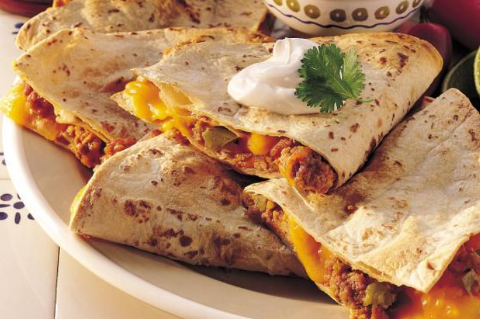

Comida Mexicana
Como conocemos, la comida tradicional mexicana se basa en las harinas, vegetales y carnes. Confeccionan muchos plataos utilizando la tortilla de trigo o de maiz.Si alguna ves haz probado algun plato mexicano, sabes que son exquisitos y ademas son relativamente faciles de confeccionar. A continuacion les dejamos con una galeria de platos mexicanos.
Galeria:
Quesadillas

Entomatadas de pollo

Tostadas de tinga